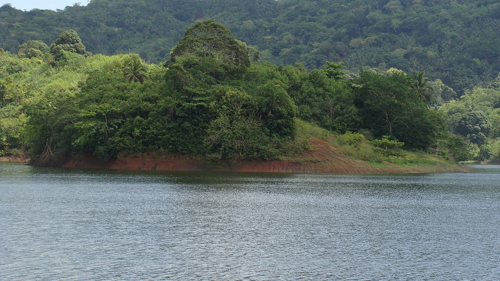

Accueil › Politique & Institutions › L'eau potable en outre-mer Politique 20 oct. 2026 15 min de lecture
Eau potable en outre-mer : ce qui est établi sur les coupures en Guadeloupe, en Martinique, à Mayotte et à La Réunion
Tours d'eau, eau en bouteille, réseaux qui perdent plus de la moitié de l'eau produite : dans plusieurs départements d'outre-mer, l'accès continu à l'eau du robinet n'est pas garanti, parfois depuis plus de dix ans. Ce que disent la Cour des comptes, l'Insee, les agences régionales de santé, les juridictions et l'ONU, territoire par territoire, et ce que valent les chiffres qui circulent.
Par Le Petit Monographe Mis à jour : 20 octobre 2026 · Données arrêtées au 20 octobre 2026 · 36 sources

La retenue collinaire de Dzoumogné, à Mayotte, bordée de berges de terre rouge découvertes. Photo : Plg56, CC BY-SA 3.0, recadrée, Wikimedia Commons
En résumé Guadeloupe : un réseau qui perd plus de la moitié de l'eau Martinique : un réseau fragile en saison sèche Antilles : l'eau, le chlordécone et la vie quotidienne Mayotte : la pluie, les tours d'eau et le choléra La Réunion : de l'eau, mais pas toujours sûre Qui est responsable ? Les procédures judiciaires Les chiffres qui circulent Ce qu'on ne sait pas Sources Historique
En résumé
En Guadeloupe, 58 % de l'eau produite en 2023 n'est pas arrivée jusqu'aux usagers, fuites et volumes non comptés confondus ; la moyenne nationale du rendement des réseaux est de 79 % en 2024 4 33 1 À Mayotte, les coupures sont en cours à la date d'arrêt des données : depuis le 15 juillet 2026, les abonnés reçoivent l'eau 30 heures sur 72, pour des besoins de 47 500 m³ par jour et une capacité de 37 000 m³ 27 26 22 À La Réunion, l'eau du robinet est en majorité conforme, mais en 2021 la moitié des abonnés étaient desservis par des réseaux « ne garantissant pas une sécurité sanitaire suffisante », selon l'ARS 30 La distribution de l'eau est une compétence des communes et de leurs groupements, pas de l'État 35 1 1 Une information judiciaire contre X est ouverte au pôle santé publique de Paris pour mise en danger d'autrui et fourniture d'eau non conforme en Guadeloupe entre 2017 et 2024 16 25
À noter
Ce dossier compare des données de sources et d'années différentes ; chaque chiffre est daté et sourcé, et les écarts entre sources sont signalés. Il ne désigne aucun responsable individuel : les procédures pénales en cours visent des faits, pas des personnes mises en examen. Rendement du réseau : part de l'eau mise en distribution qui est effectivement consommée ou comptée ; le reste correspond aux fuites et aux volumes non comptés. Tours d'eau : coupures planifiées par secteur, en alternance. Retenue collinaire : réservoir créé par un barrage, alimenté par la pluie et les ruisseaux. Contrat de progrès : engagement entre l'État et une collectivité, qui conditionne les aides à des objectifs.
2. Guadeloupe : un réseau qui perd plus de la moitié de l'eauFait établi
Le réseau guadeloupéen compte entre 2 800 et 3 119 km de canalisations ; la Cour des comptes le qualifie de « vétuste et fuyard en raison d'une absence d'entretien des infrastructures ». En 2022, le rendement était de 29,2 % sur le territoire géré directement par le syndicat unique, le SMGEAG, et supérieur à 44 % sur la partie déléguée à un opérateur privé. L'eau potable provient à 92 % des rivières, et 50 millions de bouteilles d'eau sont vendues chaque année 1
Fait établi
À l'échelle de l'archipel, l'Office de l'eau de Guadeloupe mesure un taux de perte de 61,7 % en 2021, en précisant que des incertitudes pèsent sur les volumes comptés lors du changement de gestionnaire cette année-là 2 3 4 5
Fait établi
Le nombre de personnes touchées par les coupures n'est pas mesuré de façon régulière. En juin 2021, le gouvernement indique à l'Assemblée nationale que « le quart de la population guadeloupéenne, soit environ 100 000 habitants, subit des coupures d'eau régulières » 6 7
Fait établi
La chronologie est documentée par la Cour des comptes. Entre 2005 et 2015, le retrait de l'ingénierie publique de l'État, la réforme de l'intercommunalité et les « difficultés et incuries » du principal syndicat, le SIAEAG, conduisent à un « quasi-abandon de l'investissement » ; avec le départ de l'opérateur privé en 2014, « les "tours d'eau" s'imposent progressivement comme un mode de gestion à part entière ». La loi du 29 avril 2021 crée le SMGEAG, qui remplace les anciens gestionnaires le 1er septembre 2021, sauf à Marie-Galante 1 1
Fait établi
Le renouvellement est lent. Selon la chambre régionale des comptes, citée par RCI, « il faudrait 208 ans pour renouveler l'ensemble des canalisations » au rythme actuel, et 1,2 milliard d'euros pour mettre fin aux tours d'eau 8 9
Interprétationlectures divergentes
Les chiffres sur le renouvellement divergent. La Cour des comptes donne pour le SMGEAG un taux de renouvellement de 0,62 % par an en 2022, proche de l'objectif national de 0,5 %, « sans pour autant qu'aucune véritable amélioration de la qualité du service ne soit perceptible » 1
3. Martinique : un réseau fragile en saison sècheFait établi
En Martinique, le réseau compte 3 800 km de canalisations ; la production annuelle est de 40 millions de m³ pour 23 millions de m³ consommés, soit un taux de perte global « d'environ 42 % », avec de fortes différences entre intercommunalités. Le taux de renouvellement est d'environ 0,2 % par an, inférieur à l'objectif national 1 18
4. Antilles : l'eau, le chlordécone et la vie quotidienneFait établi
Le chlordécone, un insecticide utilisé dans les bananeraies jusqu'en 1993, contamine durablement les sols et les rivières. En Guadeloupe, seules 36 % des 47 masses d'eau de cours d'eau sont en bon état, « du fait de la présence de chlordécone, cuivre et zinc notamment » 1 12
Fait établi
La Défenseure des droits a relevé en mars 2023, dans certaines écoles de Guadeloupe et de Martinique, « jusqu'à 20 % de jours de classe perdus, sans être rattrapés, au cours de l'année 2021 », du fait des grèves et d'événements climatiques et environnementaux 11 10
Témoignage
Des habitants recourent à l'eau des rivières pour les usages domestiques. Un habitant de Capesterre-Belle-Eau explique à RCI l'utiliser « uniquement pour les sanitaires, pour la vaisselle » et acheter de l'eau en bouteille pour boire 13
5. Mayotte : la pluie, les tours d'eau et le choléraFait établi
À Mayotte, la ressource dépend « à 95 % de la pluviométrie », selon le gouvernement en 2023 20 19
Fait établi
Les crises sont récurrentes. En août 2023, après une sécheresse que le gouvernement juge « inédite depuis 26 ans », le préfet annonce des coupures de 48 heures sur toute l'île à partir du 4 septembre, soit l'eau un jour sur trois 20 21 25 36
Fait établi
Début 2024, avant Chido, 25 % des ménages ne disposaient pas d'eau courante dans leur logement, selon l'enquête Logement de l'Insee 22
Fait établi
En 2024, une épidémie de choléra a touché Mayotte : 221 cas et 5 décès attribués au choléra au 29 juillet, selon Santé publique France 23 24
Fait établi
La loi de programmation pour la refondation de Mayotte du 11 août 2025 programme 730 millions d'euros pour l'eau et l'assainissement. L'État s'y engage à réaliser une deuxième usine de dessalement à Ironi Bé, « opérationnelle en 2026 », et une troisième retenue collinaire, et poursuit un objectif de fin des tours d'eau « d'ici la fin de l'année 2026 » 26 27 28
Interprétation
À la date d'arrêt des données, l'objectif d'une eau disponible en continu fin 2026 paraît hors d'atteinte : la capacité de production reste inférieure d'environ un cinquième aux besoins, et la principale infrastructure nouvelle est suspendue par la justice 27 28
6. La Réunion : de l'eau, mais pas toujours sûreFait établi
La Réunion dispose de ressources plus abondantes et d'un réseau dont le rendement atteint 61 % en 2023. La même année, 96 % des analyses étaient conformes en microbiologie et 98 % en physico-chimie, selon l'Office de l'eau 29 30
Fait établi
Les coupures y sont liées aux sécheresses et aux cyclones. En février 2025, en pleine sécheresse, 28 240 personnes restaient approvisionnées en eau embouteillée 31 32
Figure 01 Un renouvellement des réseaux très inégal selon les territoires Taux moyen de renouvellement des réseaux d'eau potable, en % du linéaire par an, données 2022 sauf Mayotte (2020) Guadeloupe (SMGEAG, en régie) La Réunion (moyenne, environ) Lecture : Au rythme de 0,06 % par an, renouveler l'ensemble du réseau de Mayotte prendrait plus de 1 600 ans, contre 200 ans au rythme de l'objectif national.
Note : Valeurs arrondies par la Cour pour la Martinique, La Réunion et Mayotte ; les durées de la phrase de lecture sont un calcul du Petit Monographe (100 divisé par le taux annuel). Un taux de renouvellement proche de l'objectif ne garantit pas un bon service : la Cour le souligne pour la Guadeloupe.
Source : Cour des comptes, La gestion de l'eau potable et de l'assainissement en outre-mer, janvier 2025 1
Voir les données Taux moyen de renouvellement des réseaux d'eau potable, en % du linéaire par an, données 2022 sauf Mayotte (2020) Guadeloupe (SMGEAG, en régie) 0,62 La Réunion (moyenne, environ) 0,5 Martinique (environ) 0,2 Mayotte (environ) 0,06 Objectif national 0,5
7. Qui est responsable ?Fait établi
La loi confie la distribution de l'eau potable aux communes, puis à leurs intercommunalités ; l'État intervient par le contrôle sanitaire des ARS, les préfets et les financements 35 1
Fait établi
La commission d'enquête de l'Assemblée nationale sur l'eau, présidée par Mathilde Panot et dont le rapporteur était Olivier Serva, a parlé en 2021 d'un « État qui n'a pas écouté les signaux de la dégradation du service et qui a failli dans son rôle de conseil », tout en relevant que « les élus portent une part de responsabilité » 10 5
Fait établi
Le plan Eau DOM, lancé en 2016 pour dix ans, a engagé 889 millions d'euros, dont 410 millions de subventions de l'État et 479 millions de prêts ; les besoins recensés dans les contrats de progrès s'élèvent à 2,3 milliards d'euros pour les six territoires concernés. La Cour juge la logique de conditionnalité des aides « inaboutie » 1
Interprétationlectures divergentes
L'expression « discrimination environnementale » est employée par des associations, dont Notre Affaire à Tous dans son rapport « Soif de justice » de juin 2025 transmis à l'ONU 17 34
8. Les procédures judiciairesFait établiétat de la procédure
En Guadeloupe, le 15 mai 2020, le juge des référés du tribunal administratif a enjoint au SIAEAG de fournir chaque jour à des habitants de Saint-François un pack de six bouteilles d'1,5 litre pendant l'état d'urgence sanitaire, en qualifiant l'accès à l'eau de « droit fondamental indissociable du droit à la vie et à la dignité humaine » 14 15
Fait établiétat de la procédure
Une information judiciaire contre X est ouverte devant un juge d'instruction du pôle santé publique de Paris pour mise en danger d'autrui, liée aux coupures, et fourniture d'eau non conforme, pour des faits commis entre le 1er janvier 2017 et le 5 septembre 2024. Aucune mise en examen n'est connue à la date d'arrêt des données 16
Fait établiétat de la procédure
À Mayotte, l'association Notre Affaire à Tous, le collectif « Mayotte a soif » et 18 particuliers demandaient au juge d'ordonner au préfet un plan d'urgence pour l'eau. Le Conseil d'État a rejeté leur requête le 26 décembre 2023, jugeant qu'il n'y avait pas d'atteinte grave et manifestement illégale aux libertés « notamment compte tenu des mesures déjà prises » ; il qualifie la situation de « crise hydrique exceptionnelle » due à « un déficit structurel de production d'eau » 25
9. Les chiffres qui circulentÀ noter
Un texte largement partagé sur l'eau en outre-mer mêle des faits exacts et des chiffres déformés. Voici ce que les sources permettent de dire.
Interprétation
« Près de 70 % de l'eau s'évapore dans la nature » en Guadeloupe : exagéré. Les pertes sont de 58 % à 68 % selon les années récentes, et elles incluent des volumes non comptés, pas seulement des fuites ; 71 % ne concerne que le territoire en régie du SMGEAG en 2022 1 3 4
Interprétation
« Selon la Cour des comptes, il faudrait plus de 200 ans » : le chiffre vient de la chambre régionale des comptes de Guadeloupe, pas de la Cour, et concerne le seul syndicat SMGEAG 8
Interprétation
« Plus de 80 000 habitants » privés d'eau en Guadeloupe : ce chiffre n'apparaît comme total régional dans aucune source officielle consultée. Le seul chiffre officiel est d'environ 100 000 habitants concernés par des coupures régulières en 2021 ; le préfet a évoqué 60 à 70 % de la population en 2024, sans comptage publié 6 7
Interprétation
À Mayotte, l'eau dépendrait « presque exclusivement » de deux retenues : inexact. Les retenues fournissent environ un sixième des prélèvements ; c'est la dépendance à la pluie qui est presque totale 19 20
Interprétation
Un « marché noir » de l'eau à 80 ou 100 euros le m³ : aucune source vérifiable n'a été trouvée. Cette affirmation n'est pas reprise ici.
Interprétation
« 20 % des jours d'école perdus » : le chiffre existe, mais il porte sur certaines écoles des Antilles en 2021 et sur l'ensemble des causes, dont les grèves, pas sur le seul manque d'eau 11
Interprétation
« Des ONG ont attaqué l'État » : la plupart des actions visent les syndicats des eaux et les collectivités ; la seule requête dirigée contre l'État trouvée, à Mayotte, a été rejetée 14 15 25
10. Ce qu'on ne sait pasLe nombre de personnes privées d'eau de façon régulière en Guadeloupe aujourd'hui : aucun comptage officiel récent n'a été trouvé 6 7 Le nombre de jours d'école perdus à cause du seul manque d'eau , en Guadeloupe comme à Mayotte : aucune donnée des rectorats n'a été trouvée.Le coût total de la distribution d'eau en bouteille à Mayotte en 2023 et 2024 : aucun chiffre officiel consolidé n'a été trouvé.Le contenu du rapport définitif de la chambre régionale des comptes de Guadeloupe de 2025 et la méthode de calcul des 208 ans 8 Les suites de l'information judiciaire ouverte à Paris et de la plainte du collectif La Goutte d'Eau 15 16 La date réelle de mise en service de l'usine d'Ironi Bé , après la suspension de son autorisation 28 11. Sources
Cour des comptes, « La gestion de l'eau potable et de l'assainissement en outre-mer », communication à la commission des finances du Sénat, janvier 2025, publiée le 12 mars 2025. www.ccomptes.fr/fr/publications/la-gestion-de-leau-potable-et-de-lassainissement-en-outre-mer ↑
Office de l'eau Guadeloupe, « Eau et assainissement, les chiffres clés 2023 » (données 2021). www.eauguadeloupe.com/_files/ugd/50d6f8_bb9440ce93c74842b06bdce0e30542ac.pdf ↑
Source secondaire : Le Courrier de Guadeloupe, « 68 % des volumes d'eau potable perdus », 17 décembre 2024 (chiffres de l'Office de l'eau pour 2022). lecourrierdeguadeloupe.com/68-des-volumes-deau-potable-perdus/?print=pdf ↑
RCI, « Eau en Guadeloupe : près de 60 % des volumes perdus et une qualité des ressources en baisse », 7 janvier 2026 (données 2023). rci.fm/guadeloupe/infos/Societe/Eau-en-Guadeloupe-pres-de-60-des-volumes-perdus-et-une-qualite-des-ressources-en ↑
ONU Info, « Guadeloupe : des experts de l'ONU exhortent la France à garantir l'accès à l'eau potable », 28 mars 2024. news.un.org/fr/story/2024/03/1144446 ↑
Assemblée nationale, question au Gouvernement n° 4186, réponse publiée au JO le 30 juin 2021. www.assemblee-nationale.fr/dyn/15/questions/QANR5L15QG4186.pdf ↑
L'info durable (avec AFP), « Guadeloupe : l'origine de la crise de l'eau, des décennies de défaillances », 16 avril 2024. www.linfodurable.fr/guadeloupe-lorigine-de-la-crise-de-leau-des-decennies-de-defaillances-44860 ↑
RCI, « Congrès de l'eau en Guadeloupe : les élus réunis face à l'urgence d'une crise qui dure », juin 2026 (cite le rapport de la chambre régionale des comptes de juillet 2025). rci.fm/guadeloupe/infos/Societe/Congres-de-leau-en-Guadeloupe-les-elus-reunis-face-lurgence-dune-crise-qui-dure ↑
L'info durable (avec AFP), « Crise de l'eau en Guadeloupe : les élus votent un plan d'urgence et sollicitent l'État », 25 juin 2026. www.linfodurable.fr/crise-de-leau-en-guadeloupe-les-elus-votent-un-plan-durgence-et-sollicitent-letat-57433 ↑
Assemblée nationale, rapport n° 4376 de la commission d'enquête relative à la mainmise sur la ressource en eau par les intérêts privés et ses conséquences, présidente Mme Mathilde Panot, rapporteur M. Olivier Serva, 15 juillet 2021. www.assemblee-nationale.fr/dyn/15/rapports/ceeau/l15b4376_rapport-enquete.pdf ↑
Maire-info, « Antilles : la Défenseure des droits critique un accès entravé aux services publics », 27 mars 2023. www.maire-info.com/outre-mer/antilles-la-defenseure-des-droits-critique-un-acces-entrave-aux-services-publics-article-27348 ↑
ARS Guadeloupe, « La qualité de l'eau du robinet », page mise à jour en septembre 2026. www.guadeloupe.ars.sante.fr/la-qualite-de-leau-du-robinet ↑
RCI, « Eau secours : coupures d'eau, quand les habitants se tournent vers la rivière », 26 novembre 2025. rci.fm/guadeloupe/infos/Societe/Eau-secours-Coupures-deau-quand-les-habitants-se-tournent-vers-la-riviere ↑
Tribunal administratif de la Guadeloupe, ordonnance de référé n° 2000384 du 15 mai 2020. guadeloupe.tribunal-administratif.fr/Media/mediatheque-ta-guadeloupe/import/2000384 ↑
Ligue des droits de l'Homme, communiqué de presse du 15 mai 2025 sur l'eau en Guadeloupe. www.ldh-france.org/wp-content/uploads/2025/05/15.05.25-Communique-de-presse-2.pdf ↑
L'info durable (avec AFP), « Eau potable en Guadeloupe : une enquête pénale ouverte à Paris », 28 septembre 2026. www.linfodurable.fr/environnement/eau-potable-en-guadeloupe-une-enquete-penale-ouverte-paris-59150 ↑
Banque des territoires, Localtis, Anne Lenormand, « Accès à l'eau potable dans les outre-mer : des ONG dénoncent une "discrimination environnementale" », 23 juin 2025. www.banquedesterritoires.fr/acces-leau-potable-dans-les-outre-mer-des-ong-denoncent-une-discrimination-environnementale ↑
RCI, « Sécheresse : des coupures d'eau tournantes à partir de ce mardi à Fort-de-France », 21 juillet 2026. rci.fm/martinique/infos/Informations-pratiques/Secheresse-des-coupures-deau-tournantes-partir-de-ce-mardi-Fort-de ↑
ARS Mayotte, « Bilan de la qualité des eaux destinées à la consommation humaine, année 2021 », septembre 2022. www.mayotte.ars.sante.fr/system/files/2022-09/Bilan_Qualit%C3%A9%20EDCH_ARS_Ann%C3%A9e%202021_vf.pdf ↑
Assemblée nationale, question écrite n° 6983 (16e législature) et réponse du gouvernement, 2023. www.assemblee-nationale.fr/dyn/16/questions/QANR5L16QE6983.pdf ↑
Outremers 360, « Mayotte : le préfet annonce des coupures d'eau 2 jours sur 3 pour faire face à la pénurie », 24 août 2023. outremers360.com/bassin-indien-appli/mayotte-le-prefet-annonce-des-coupures-deau-2-jours-sur-3-pour-faire-face-a-la-penurie ↑
Insee, « Des conditions de logement toujours précaires à Mayotte, malgré quelques améliorations », Insee Analyses Mayotte n° 42, 18 juin 2026. www.insee.fr/fr/statistiques/9007686 ↑
Santé publique France, « Choléra à Mayotte. Point au 29 juillet 2024 », 30 juillet 2024. www.santepubliquefrance.fr/index.php/regions-et-territoires/ocean-indien/bulletin-regional/cholera-a-mayotte-point-au-29-juillet-2024 ↑
Santé publique France, bulletin choléra Mayotte du 8 mai 2024. www.santepubliquefrance.fr/sites/default/files/rdd/document/bullreg_cholera_mayotte_20240508.pdf ↑
Conseil d'État, ordonnance de référé n° 489993 du 26 décembre 2023, Notre Affaire à Tous et autres. www.conseil-etat.fr/fr/arianeweb/CE/decision/2023-12-26/489993 ↑
Loi n° 2025-797 du 11 août 2025 de programmation pour la refondation de Mayotte, JO du 12 août 2025, rapport annexé (copie publiée par la Fédération hospitalière de France). www.fhf.fr/sites/default/files/2025-08/LOI%20n%C2%B0%202025-797%20du%2011%20ao%C3%BBt%202025%20de%20programmation%20pour%20la%20refondation%20de%20Mayotte%20%281%29_0.pdf ↑
Mayotte Hebdo, David Bismuth, « Mayotte s'apprête à durcir les tours d'eau », 15 juillet 2026. www.mayottehebdo.com/actualite/environnement/mayotte-sapprete-a-durcir-les-tours-deau/ ↑
Tribunal administratif de Mayotte, communiqué de presse du 31 juillet 2026, jugement n° 2501809 sur l'usine de dessalement d'Ironi Bé. mayotte.tribunal-administratif.fr/Media/mediatheque-ta-mayotte/documents/2026/juillet/cp-2501809 ↑
Office de l'eau Réunion, « Chroniques de l'eau » n° 146, août 2025. www.eaureunion.fr/fileadmin/user_upload/Chroniques/2025/25.08.08_CHRONIQUES_de_L_EAU_146.pdf ↑
ARS La Réunion, « Qualité de l'eau du robinet, bilan 2021 », septembre 2022. www.lareunion.ars.sante.fr/system/files/2022-09/ARS_BILAN_QUALITE_EAU.pdf ↑
ARS La Réunion, fiche de situation sécheresse du 6 février 2025. lareunion.ars.sante.fr/system/files/2025-02/20250206_fiche%20situation%20s%C3%A9cheresse.pdf ↑
Maire-info, « La Réunion lourdement frappée par le cyclone Garance », 3 mars 2025. www.maire-info.com/la-reunion-lourdement-frappee-par-le-cyclone-garance-article2-29455 ↑
Office français de la biodiversité, observatoire SISPEA, communiqué sur les données 2024 des services d'eau et d'assainissement, 25 juin 2026. ofb.gouv.fr/sites/ofb-gouv-fr/files/2026-07/cp_sispea_2024_0.pdf ↑
Source secondaire : Coalition Eau, étude sur l'accès à l'eau et à l'assainissement dans les outre-mer, 2019 (cite le rapport interinspections de juin 2013 sur la politique de l'eau). www.coordinationsud.org/wp-content/uploads/rapport-etude-outre-mer-coalition-eau-compressed.pdf ↑
Collectivités locales (portail de l'État), « L'eau et l'assainissement ». www.collectivites-locales.gouv.fr/leau-et-lassainissement ↑
Premier ministre, communiqué de presse du 30 décembre 2024 sur la reconstruction de Mayotte après le cyclone Chido (copie publiée sur le site fna.fr). fna.fr/wp-content/uploads/2024/12/Communique-de-presse-Premier-ministre-30-decembre-2024.pdf ↑
12. Historique20 octobre 2026 : première publication. 20 octobre 2026 : chiffres, dates et décisions relus sur les sources d'origine. Une erreur ? Une source plus récente ? Signalez-la . Les corrections sont publiées sur la page Méthode .